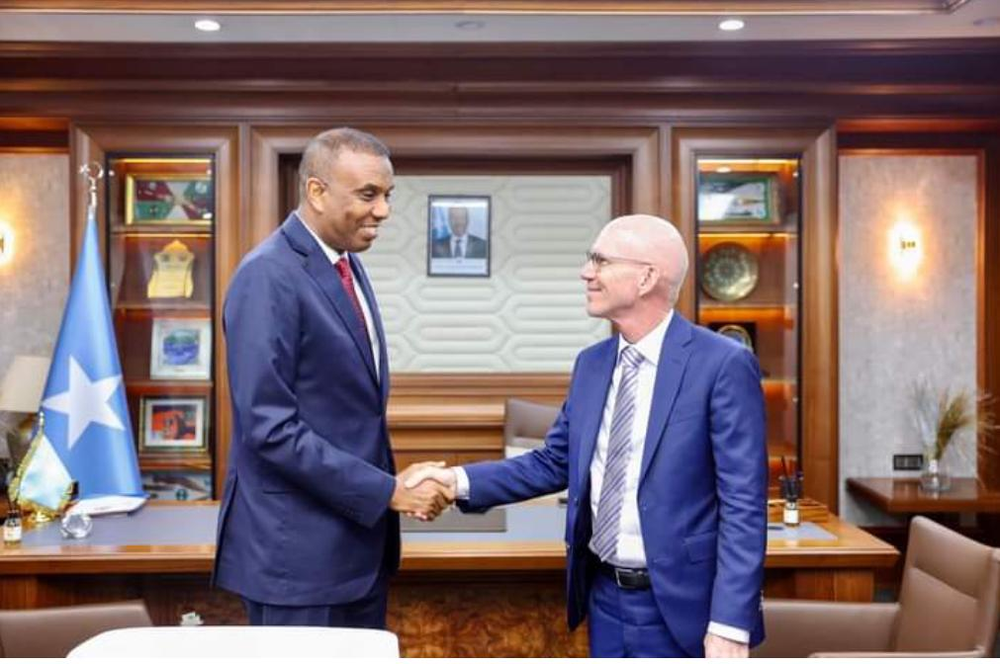

warbixin
warbixiin

Ra’iisul Wasaaraha Xukuumadda Federaalka Soomaaliya, Mudane Xamsa Cabdi Barre, ayaa maanta ku qaabilay xafiiskiisa James Swan, Sii-hayaha Ergayga Gaarka ah ee Xoghayaha Guud ee Qaramada Midoobay u qaabilsan Soomaaliya.
Kulankan ayaa diiradda lagu saaray xoojinta wada-shaqeynta ka dhaxeysa Dowladda Federaalka iyo Qaramada Midoobay. Labada mas’uul ayaa si gaar ah uga hadlay arrimaha muhiimka ah ee ay dowladda mudnaanta siineyso, kuwaas oo ay kamid yihiin:
Xasillinta deegaannada laga xoreeyay Shabaab, si amniga looga adkeeyo.
Hirgelinta doorashooyin ay shacabka Soomaaliyeed ku doortaan madaxda dalka, iyada oo la diyaarinayo hanaan dimoqraadi ah.
Arrimaha bini’aadanimada, iyadoo lala tacaalayo xaaladaha nololeed ee dadka ay saameeyeen colaadaha iyo abaaraha.
James Swan ayaa sidoo kale la wadaagay Ra’iisul Wasaaraha waxyaabihii uu kusoo arkay Kismaayo, halkaas oo uu maanta shirar kala duwan kula yeeshay Madaxweynaha Jubbaland, Axmed Maxamed Islaam (Axmed Madoobe). Kulamadaasi waxay diiradda saareen iskaashiga heer dowlad-goboleed iyo xal u helidda caqabadaha ka jira deegaannada Jubbaland.
Labada dhinac ayaa isla qaatay muhiimadda sii wadista taageerada caalamiga ah iyo in wada-hadalladu noqdaan kuwo waxtar leh, si Soomaaliya u gaarto nabad waarta iyo horumar siyaasadeed.